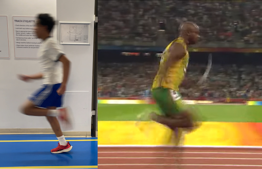
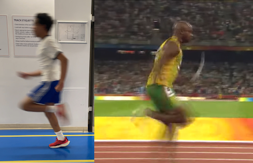

4.0: TOP SPEED
 

4.1: Am I really hitting true top speed?
Let me get something straight with you,
most people, either:
hit top speed too early and fall off
or worse, never even hit their REAL top speed.
Why?
Because their training methods are not optimal.
that could be from⁽¹⁶⁾:
- little to no recovery between reps
- straight up not training the right stuff
- no recovery between days as well
- just going through the motions
- and more…
They’re either training maintenance or the drive phase when they actually want to train top speed.
This is different from overlooking the drive or transition phase,
because with top speed, people train it wrong, but for overlooked phases? They don’t train it entirely.
And here’s another catch:
As soon as you hit top speed, it’s all about the maintenance phase.
So why did I separate them?
Because the goals are different.
This phase actually makes sure that you’re hitting top speed.
The maintenance phase tries to keep it as long as possible. Because what’s maintenance without top speed?
Pointless.
There are a thousand different reasons as to why some sprinters never hit their true top speed, but for now,
here are the mechanics to look out for:
- The figure 4 (legs hit a figure 4 position when recovering from the side view)
- Relaxed face, jaw, and hands
- Aggressive arms (MOSTLY 90-90 degrees at start and end points of the swing)
- Cyclical motion (part of figure-4)
- Stride frequency and length at the peak
‘Cause that’s basically the point, the transition phase should’ve eased you into this phase.
4.2: Importance
It’s super obvious to understand that:
when you’re at top speed, stride length and stride frequency are at the highest.
Because those are the two factors for speed, according to the biomechanical formula⁽¹⁸⁾.
So what am I actually going to explain here?
The figure-4 that you noticed.
In short (and simple), the figure-4 is just a fancy, made up name⁽²⁰⁾ for a technique to where when the foot strikes the ground, you can draw out the number 4 on their leg cycle.
For what it looks like?
Just imagine your two legs, from a side view the bones of your legs make it look like the number 4.
…and you can just look at the analysis photo and try to draw out the number four on the legs, see if it matches.
Now most importantly, how is figure 4 effective?
We have to introduce yet another topic: backside mechanics.
There’s lots of depth and complexity when it comes to this topic, but just for you to understand what it is, it means:
anything happens in your legs behind your center of mass/hip⁽²¹⁾ are backside mechanics.
So, by proper logic, we want to minimize this as much as possible so we can have the best stride frequency we can achieve.
And one of the best ways to do that?
The figure-4.
How do I do it?
In order, it goes like this⁽²²⁾:
- bring your foot up to your thigh
- relax the calf (so knee is 90 degrees)
- strike down under your hip
- do the same for the other leg
- add movement
- progress speed until you can full sprint with it
We don’t even need a primary goal, or secondary goal.
In fact, you can basically consider “fast legs without affecting stride length” the primary goal.
It’s that simple, just like I said though, ONLY if the rest of your sprint set it up right.
4.3: Analysis
Now, let’s analyse it with your new profound knowledge about top speed…and the figure-4.
First off, I don’t even have to tell you, you can immediately notice the figure-4 on BOTH images.
Although Powell’s is more blurry, that’s just how fast he is.
You can notice Powell’s back foot higher than mine, but isn’t our goal to minimize backside mechanics?
Well, yes, but…
He is high because he is a tall sprinter (more than 6 ft), so it’s basically a natural occurrence,
not only that, high heel recovery actually improves your stride frequency by setting you up for the next step⁽²³⁾.
So yeah, it’s a good thing for him.
One more main thing to point out, and it’s not even about the figure-4…
Powell’s posture is WAY better than mine.
Most obviously, he has a much stronger forward lean, especially for upright sprinting,
which MAY help with better stride frequency.
And he also has a better head position, it’s more neutral towards his body angle.
Me? It just looks like I’m looking straight intentionally, which can waste energy, every tiny flaw can count.
Lastly, the arm action, you can tell based on the motion blur differences that his arm swing is way more aggressive and faster than mine.
4.4: Application
Now what you probably care about most for this specific phase, how do I train it?
Because training top speed just feels wrong, and impossible.
Well, it isn’t, it’s still very trainable,
just different from the “max strength acceleration” you usually think of.
I’m going to just straight up give you the exercises/drills:
- Flying sprints (focus on hitting it after the build up)
- Pogo hops and other reactive plyometrics
- Hamstring curls
- Depth jumps
- Overspeed training
Overspeed training is very self-explanatory, simply training your top speed higher than it actually is.
That can be done by downhill sprinting (around 1-3 percent downhill) and banded sprints (you and a partner attach resistance bands together, your partner runs and the resistance band propels you forward)
For reactive plyometrics, it’s basically training to improve your elasticity (ability to apply force and recycle it)
Reactive plyometrics and elasticity can be interchangeable in terms of definition.
In terms of the metrics, your ground contact time should be under 250 milliseconds.
Exercises like pogo hops (as mentioned), bounding, jumping lunges, skater hops, and more, all train your elasticity.
Now that your top speed is locked in,
it’s time to slow down into your maintenance phase.